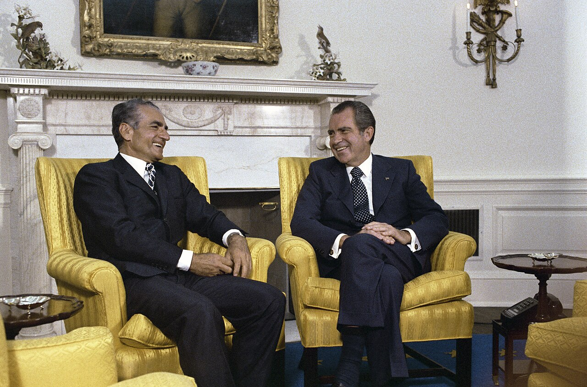

روزنامه
کودتای ۲۸ مرداد
دولت دکتر مصدق در ۲۸ مرداد ۱۳۳۲ سرنگون شد.
Deep, verifiable research on foreign policy, conflict, history, law and international relations.
Every engagement ends in a complete case file you can open, question and cite.
Findings ranked by the strength of their evidence.
Scans, cables, memos and PDFs.
Events placed on a dated timeline.
Originals, linked beside every claim.
archive.gov / NSC / 1979-11-06
The people of the United States desire to have relations with Iran based upon equality, mutual respect, and friendship.
Jimmy Carter, November 6, 1979
Exact words, with page or minute.
Clips cued to the exact timecode.
Where sources disagree, side by side.
Source AMarch 1979
Source BMay 1979
What is still unknown, stated plainly.
Each significant conclusion unfolds into evidence, and each piece of evidence into its original source.
Within two days of the embassy seizure, Washington asked Tehran's new leadership for direct talks.
Verified…to discuss with you and your designees the situation in Tehran and the full range of current issues between the U.S. and Iran.
Letter dated November 6, 1979
Carter to Khomeini, declassified NSC copy. Public domain.
In 1987 President Reagan conceded that the arms sales to Iran had turned into a trade for hostages.
VerifiedMy heart and my best intentions still tell me that's true, but the facts and the evidence tell me it is not.
Address to the Nation, March 4, 1987
A 2005 remark about Israel circulates in two competing English renderings.
ContestedSome outlets print “wiped off the map”. Other translators read “vanish from the page of time”.
Both readings shown. Neither is chosen silently.
این رژیم اشغالگر قدس باید از صفحه روزگار محو شود
Persian original, speech of October 26, 2005.
Who first called the United States the “Great Satan”, and when?
You set the question and its boundaries.
Dozens of research runs work in parallel.
Every source is checked for origin and reliability.
Findings join an evidence graph of claims and proof.
An independent review tries to break the conclusions.
The final report ships with every link intact.
Public sources only, from official texts to raw footage.
Sample research
How the conflict was built: the Great and Little Satan rhetoric, ideology, security calculations and the quiet periods of cooperation.
US and British intelligence backed the operation against the prime minister.
Verified1968
Quiet partnership under the Shah, driven by oil and shared security concerns.
Verified
Security ties that later fed the revolution's anti-American language.
Verified1979
The United States becomes the “Great Satan”. Israel, the “Little Satan”. First documented use of each term is still being traced.
Open question1980s
During the war with Iraq, arms reached Iran through Israeli channels. The scale is disputed.
ContestedSecret arms sales to Tehran, publicly acknowledged.
VerifiedCheck a story against primary documents.
Script from sources you can show on screen.
Start from a mapped base of evidence.
Brief decision makers with claims that hold.
Assess political and legal exposure with proof.
Browse claims, evidence, timeline and originals online.
A clean, citable copy for editors and clients.
AI speeds up search and processing. Important conclusions still pass verification, red-team challenge and human review.
Each claim is matched to a primary source.
A separate reviewer argues the opposite case.
A person signs off before anything ships.
Tell us what needs to be proven. We will scope the research around it.